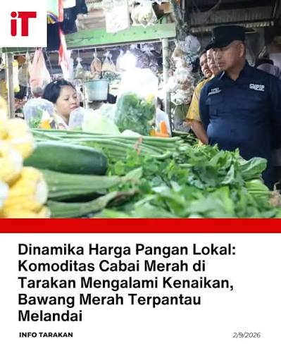

Prediksi Lonjakan Harga Cabai Rawit Jelang Musim Hujan
Dipublikasikan pada: oleh Analis Pasar

Pasokan cabai rawit dari luar daerah Tarakan diprediksi akan mengalami keterlambatan akibat cuaca buruk di perairan.
"Kami memprediksi dalam 7 hari ke depan, harga cabai rawit merah akan merangkak naik hingga menyentuh Rp 95.000 per Kg." - Dinas Perdagangan.
| Komoditas | Harga Saat Ini | Prediksi Puncak (1 Minggu) | Status Tren |
|---|---|---|---|
| Cabai Rawit Merah | Rp 83.200 / Kg | Rp 95.000 / Kg | Naik Signifikan |
| Bawang Merah | Rp 38.400 / Kg | Rp 37.000 / Kg | Turun Stabil |